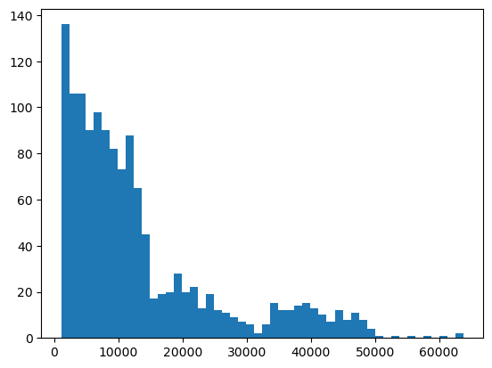
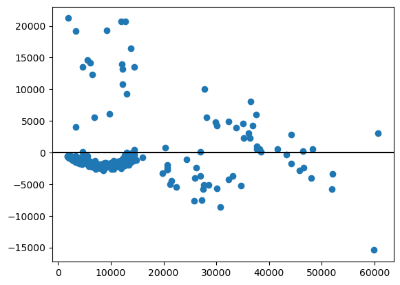

Insurance charges: multiple linear regression
Rendered notebook · Download .ipynb · Project README · All ML exercises
Question
How well can a multiple linear regression predict individual medical insurance charges from age, sex, BMI, number of children, smoking status and region, and does a smoker × BMI interaction help?
Data
Medical Cost Personal Datasets (Kaggle, insurance.csv): 1,338 people, no missing values. The notebook loads it into a local PostgreSQL table insurance, explores it with SQL, and logs model metrics to model_results. The CSV is not included in this repository.
Database: the published notebooks connect with postgresql+psycopg2://postgres@localhost:5432/postgres. The local login is read from ~/.pgpass and is not in this repository. The original connection string was edited for publishing; nothing else in the notebook was changed except local file paths in warning messages.
Methods and tools
Python, pandas, NumPy, scikit-learn, PostgreSQL, SQLAlchemy, matplotlib, statsmodels
- Sex and smoker encoded as 0/1; region one-hot encoded with the first level dropped.
- Interaction feature
smoker_bmi= smoker × BMI. - 80/20 train/test split (
random_state=42), scikit-learnLinearRegression; a variant trained on log(charges) and converted back to dollars. - statsmodels OLS summary and variance inflation factors (VIF); 5-fold cross-validation (RMSE).
Exploration (SQL)
| Group | Average charges | People |
|---|---|---|
| Smokers | $32,050 | 274 |
| Non-smokers | $8,434 | 1,064 |
| BMI ≥ 30 (obese) | $15,561 | 705 |
| BMI 25–30 (overweight) | $10,995 | 388 |
| BMI < 25 (normal) | $10,282 | 245 |
| Southeast (highest region) | $14,735 | 364 |
Results (test set)
| Model | R² | RMSE | MAE |
|---|---|---|---|
Baseline, no interaction (logged as mlr_baseline) | 0.784 | $5,796 | $4,181 |
Log target, back-transformed (mlr_log) | 0.607 | $7,815 | $3,889 |
| With smoker × BMI interaction | 0.865 | $4,574 | $2,757 |
The first two rows come from the notebook’s model_results query; the interaction row is the printed evaluation (R² 0.8653, RMSE 4,573.81, MAE 2,756.90), also logged as mlr_interaction.
Key findings
- Adding the smoker × BMI interaction lifts test R² from 0.784 to 0.865 and cuts MAE from $4,181 to $2,757.
- 5-fold cross-validated RMSE for the interaction model: $4,850 ± $392 (folds from $4,185 to $5,198).
- In the OLS fit on the training set (R² 0.834), the interaction term is large and clear: +$1,470.86 per BMI point for smokers (t = 24.3).
- Modelling log(charges) did worse in dollar terms (R² 0.607).
- VIFs for the baseline features are all at most 1.61, so collinearity is not a concern.
Charts


Notebook
insurance_nb (rendered) · insurance_nb.ipynb. 26 code cells (23 with outputs, 2 charts), 1 markdown cell.
The notebook was run out of order (execution counts 2–55, not top to bottom). The coefficient printout and the VIF table come from the model without the interaction term; the printed R², the OLS summary and the cross-validation use the interaction feature. Some cells also show harmless NumPy RuntimeWarning messages from scikit-learn’s matrix multiply.